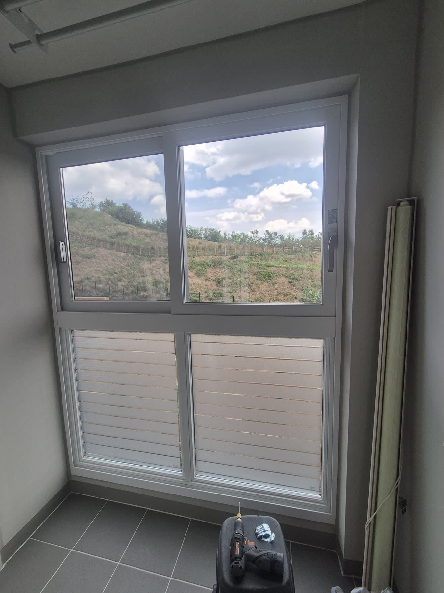
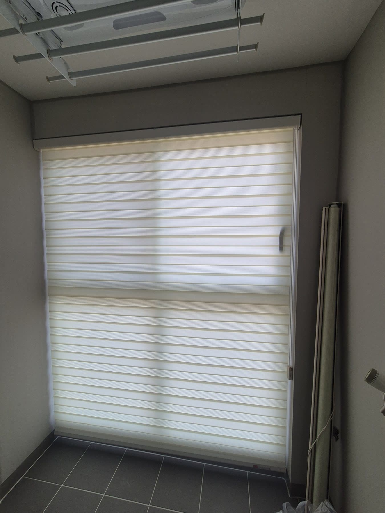
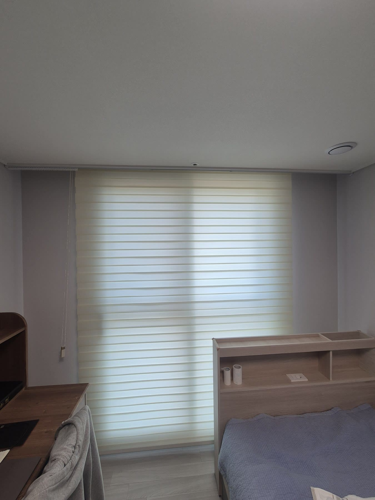
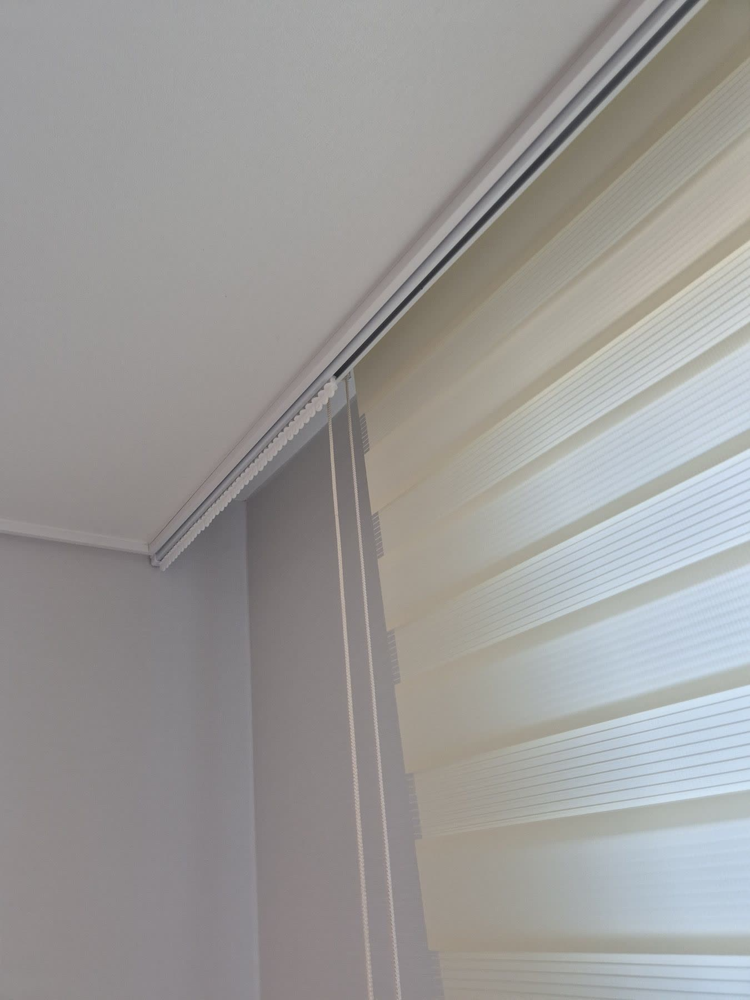

2026년 7월 11일 시공
포항 학산 한신더휴
아이보리 콤비블라인드 · 커튼레일 시공후기

이사를 하면 전에 쓰던 블라인드가 새 집 창에 안 맞는 경우가 많습니다.
포항 학산 한신더휴 이 댁도 그랬습니다.
이사 오신 뒤 기존 블라인드가 안방 베란다와 작은방 창에 맞지 않아, 그 창들만 새로 맞춰 드렸습니다.

안방 베란다와 작은방은 통창이라, 창 전체를 하나로 덮는 통블라인드가 깔끔합니다.
두 창 모두 아이보리 콤비블라인드로 맞췄습니다.
콤비블라인드는 불투명한 띠와 비치는 띠가 번갈아 겹친 원단이라, 두 겹을 맞추면 빛이 은은하게 들어오고 어긋내면 시선을 가려 줍니다.
아이보리는 어느 벽지에나 무난해서 원래 있던 것처럼 자연스럽게 들어앉습니다.

작은방은 블라인드와 커튼을 같이 쓰고 싶어 하셨고
마침 커튼레일을 미리 사 두신 게 있어 그걸 달아 드리기로 했습니다.
다만 레일을 커튼박스 안쪽에 그냥 달면 블라인드와 커튼이 같은 자리에서 겹쳐 서로 부딪히고
오르내릴 때마다 쓸려 둘 다 금방 상합니다.

그래서 커튼레일은 커튼박스 모서리 쪽으로 빼서 설치했습니다.
이렇게 하면 커튼이 블라인드보다 앞으로 나와 서로 동선을 침범하지 않고
블라인드와 커튼을 각각 편하게 쓸 수 있습니다.
고객님이 사 두신 레일이라 시공은 서비스로 도와드렸습니다.

집 전체를 다 바꾸지 않아도 됩니다.
이사 후 유독 안 맞거나 남는 창만 손봐도 집이 한결 정돈됩니다.
비슷한 시공이 필요하신가요?
창 사진 한 장이면 대략 견적을 받아보실 수 있습니다.
부재 시 문자를 남겨주시면 빠르게 답변드립니다.